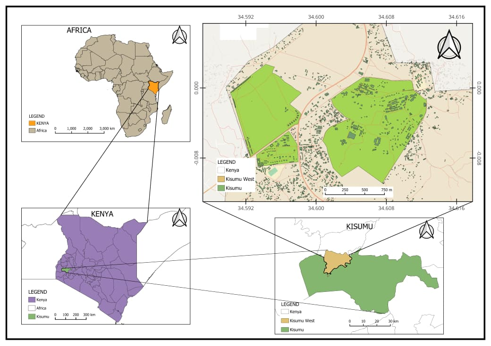
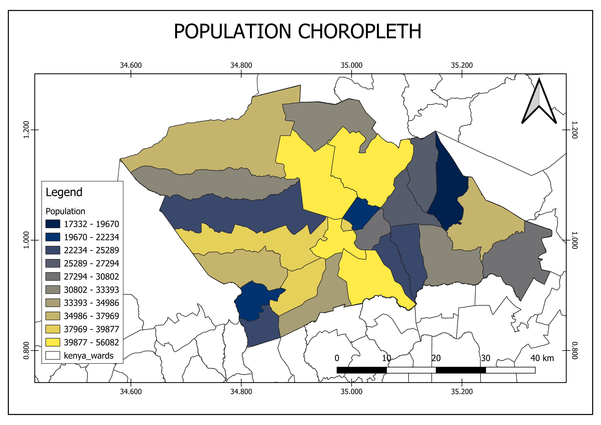
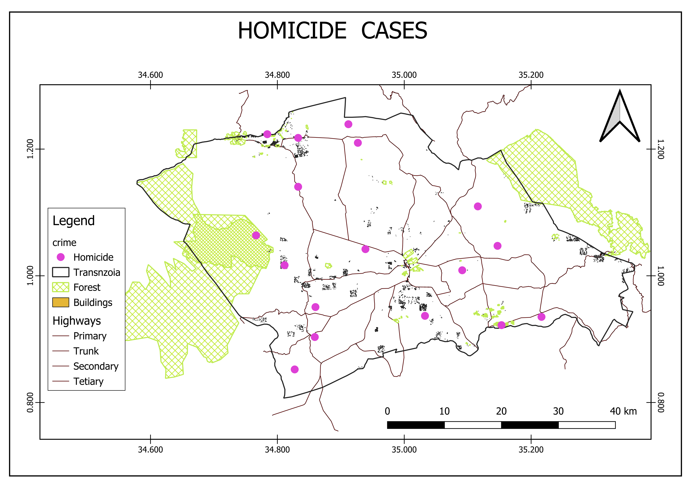
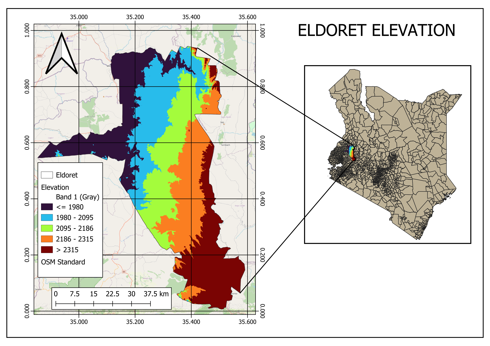
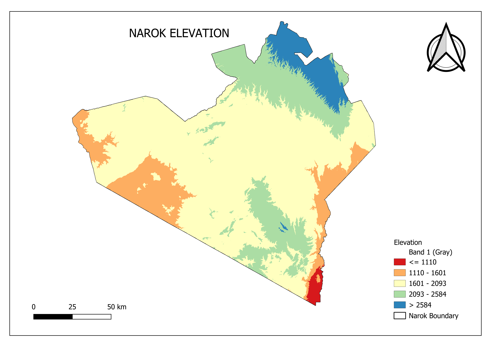

Cartography & Map Design
A collection of cartographic outputs showcasing map design, spatial visualization, and best-practice cartography for geospatial analysis and environmental management.

Cartography & Map Design

Geospatial Analysis

Environmental Mapping

Urban Planning - Eldoret

Climate Risk Assessment

Vulnerability Analysis - Narok

Hazard Mapping - Narok